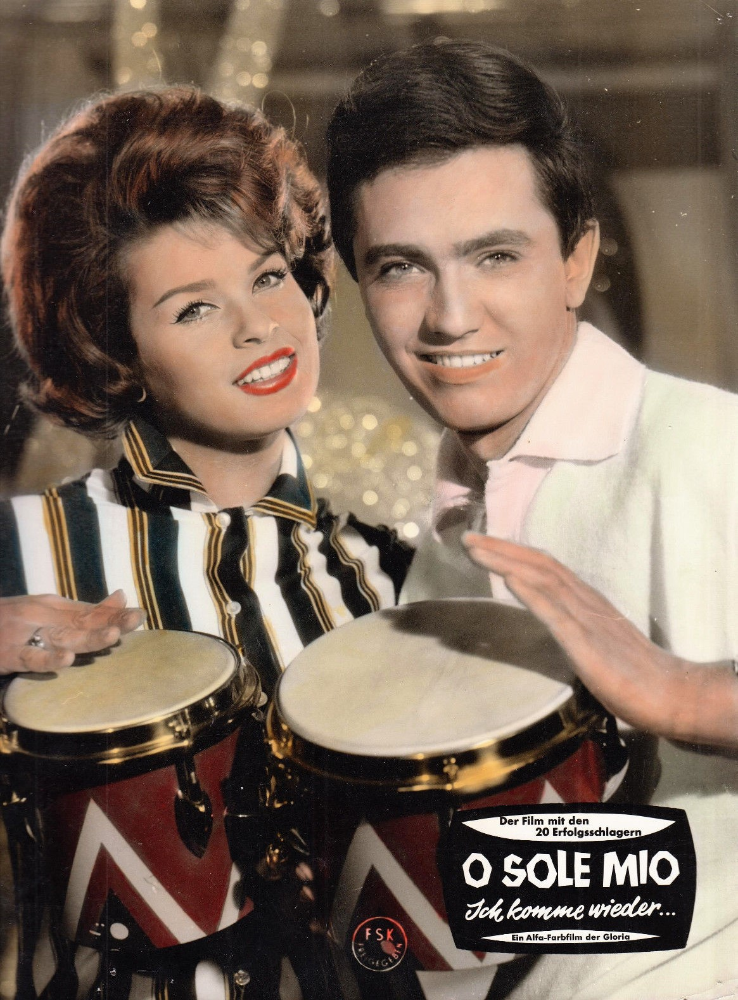
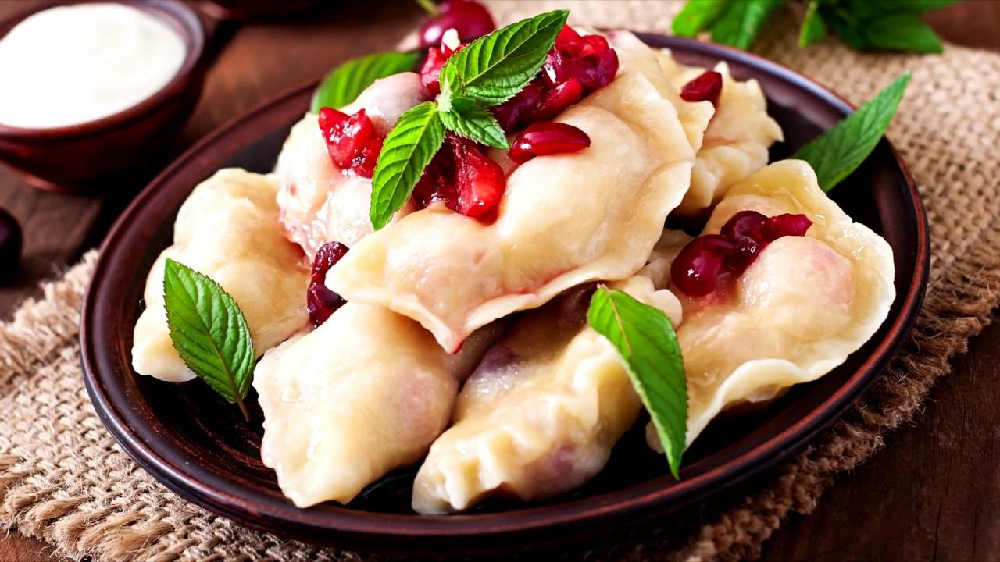
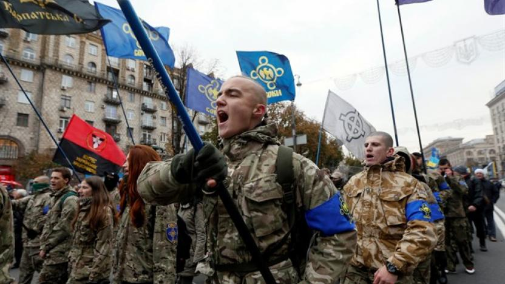

-Dünya üzerindeki birçok kültürden farklı olarak, Ukraynalılar düğün yüzüğünü sol ele değil sağ ellerine takarlar.

Dünyaca ünlü "O Sole Mio" şarkısı Ukrayna'da bestelenmiştir.
23 Haziran'da kutlanan Ivana Kupala Günü, Ukrayna'nın en eğlenceli geleneksel kutlamalarından biridir. Erkekler ve kızlar, el ele çiftler halinde katılırlar. Ve bir arınma töreninde ateşin üzerinden atlarlar. Yerliler, bir çiftin birbirini tutsak etmeden yangını atlattığında aşklarının bir ömür boyu sürdüreceğine inanıyorlardı.Bu gelenek buradan gelmektedir.
Vyshyvanka Ukrayna milli kostümüdür. Çiçeksi detaylarıyla el dokuması nakışlarla süslenmiştir. Hem kadınlar hem de erkekler bu kostümü çeşitli vesilelerle giyerler.
Popüler Paskalya yumurtası geleneği Ukrayna'dan geliyor. Aslında, yumurta balmumu ve boya kullanılarak desenlendirilmiştir. Daha sonra balmumu çıkarılmış.Ve sadece boyalar kullanılmıştır.
Dünyanın en uzun müzik aleti de Ukrayna'dandır. Boru parçasına benzeyen aletin ismi Trembita'dır.
Ukrayna uygarlığının kökeni M.Ö. 4800 yılına dayanıyor. Ülke Trypillian ve İskit uygarlıklarının yaşadığı bölgede bulunmaktadır.
Ukrayna, daha önce Neandertallerin yerleşim yeri olan birkaç arkeolojik alana ev sahipliği yapmaktadır.Burada mamut kemikleri bulunmuş olup,ilk atların burada evcilleştirildiği düşünülmektedir.
Dünyanın ilk anayasası 1710'da Ukrayna Hetman Pylyp Orlyk tarafından tanıtılmıştır. Bu belgenin amacı, güçler ayrımını getirmektir. Hem vatandaşların hem de hükümetin sorumlulukları ve hakları ortaya konulmuştur.
Kiev, 1941'de Nazilere karşı şiddetli direnişinden dolayı Sovyetler Birliği tarafından verilen Kahraman Kent statüsüne sahiptir. Almanlar, Kiev Savaşında burayı kuşatmıştır.
2. Dünya Savaşı sırasında Ukraynalı dini liderler tarafından binlerce Yahudi'ye korunma teklif edildi.Yahudiler manastırlara ve Ukrayna evlerine sığınmışlardır. Liderlerden biri olan Metropolitan Andrey Sheptytsky, insani yardım rolüyle ilgili olarak 2013 yılında İftira ve İnkarla Mücadele Birliği tarafından onurlandırılmıştır.

Borsh ve varenyky, en popüler geleneksel Ukrayna yemeklerinden bazılarıdır.
Kiev'deki McDonald's dünyanın en yoğun McDonald'slarından biridir.
Ukraynalılar yerli votkaları olan Horilka içmeyi tercih ederler.
Lviv dünyadaki kişi başına düşen en yüksek kafe sayısına sahiptir. Toplam 1500 kafe vardır.
1960'da inşa edilen dünyanın en derin metro istasyonu Ukrayna'dadır.
Ortalama ömür 71.48 yıl civarındadır.
Ukrayna dünyadaki en yüksek okuma yazma oranına sahip dördüncü ülkedir.
Yerli Ukraynalılar nüfusun kabaca yüzde 77,8'ini oluşturur.
Yerli halk, dünyanın en ağır uçağı olan An-225 Mriya'yı tasarlamıştır.

İlk gaz lambasının icadı Lviv'de gerçekleşmiştir.
Ukrayna, Karpatların ilkel kayın ormanları dahil, yedi kadar UNESCO Dünya Mirasına sahiptir.
Rusya'dan sonra Avrupa'nın ikinci en büyük ülkesidir.